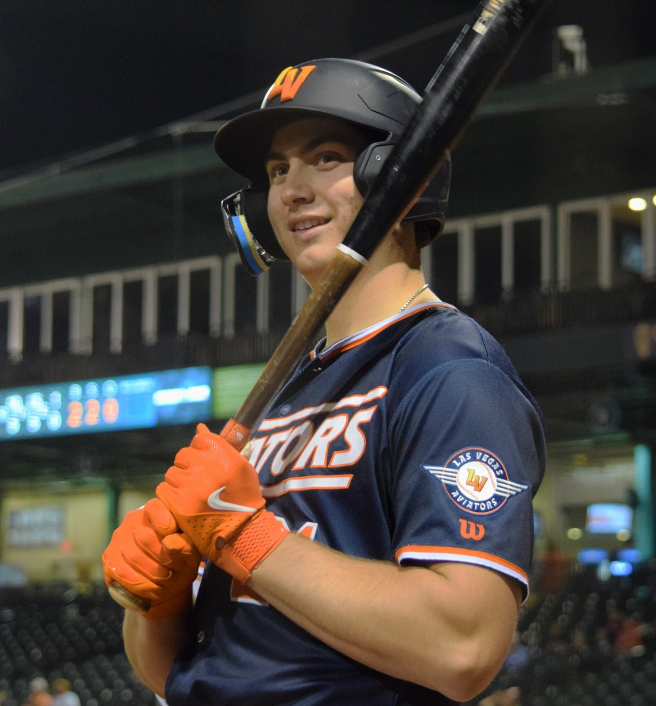

The A's Stole One Back in the Ninth and Then Walked It Away in the Tenth
Two outs, two runs down, season going nowhere, and Jacob Wilson hit the homer that tied it. Then we took the lead in the tenth. Then we walked two guys with nobody out and lost 6-5. I am so tired.

For about fifteen minutes on Tuesday night in Phoenix, I remembered why I still watch this team. Down two runs, ninth inning, two outs, nobody on base, Paul Sewald one strike away from filing the whole thing under "another quiet loss." Donovan Walton tripled. Jacob Wilson followed with a two-run homer to left, his seventh of the year, and the game was tied 4-4 with the closer standing there staring at the grass. That is the good part. Enjoy it. Take a screenshot of it. Because everything that came after is why this franchise is 43-58 and playing in front of a minor league park's worth of people.
Then the A's went ahead. In the TENTH. On the road. Jonah Heim lifted a sacrifice fly off Kevin Ginkel and it was 5-4, and for one half-inning this team was on the winning end of a comeback, a phrase I have not typed all season. All that was left was three outs against a Diamondbacks lineup that had already used up its magic. That is it. Three outs.
Luis Medina walked two guys. With nobody out. Bases loaded, no outs, in a one-run game, in extras, on the road, with the free runner already sitting there like a gift the rules hand your opponent. That is not bad luck, that is not a bloop, that is a pitcher who could not throw the baseball over the plate in the biggest inning of his month. Nolan Arenado promptly bloop-singled the tying run home, and then Ildemaro Vargas chopped one through the hole on the left side and Arizona walked off 6-5. Medina falls to 2-2. Ginkel gets the win at 4-3 despite handing the lead away himself, which tells you everything about how generous we were.
And it should never have been that close-and-then-lost in the first place, because we spotted them the whole game. Max Kepler hit a three-run homer in the FIRST inning. First inning. Before I had finished sitting down, it was 3-0. Ketel Marte tacked on a sacrifice fly in the seventh to make it 4-1, and for eight innings this was the same limp, disinterested loss we have watched a hundred times. The ninth-inning rally did not undo any of that. It just made the ending hurt in a new way, which honestly is the only innovation this team has produced since the All-Star break.
Here is where the A's are: 43-58, fourth in the AL West, coming off a night where they beat these same Diamondbacks 5-2 and then coughed up a game they had won twice. Arizona has now won seven of nine and moved into a wild card spot. Off our backs. The pattern is exhausting and by now it is undeniable. This team can hang 15 on the Nationals, out-hit teams and lose, sit dead for eight innings and then hit a two-out, two-run homer off a closer. What it cannot do is play one clean, boring, competent nine innings from start to finish.
The talent keeps flashing. Jacob Wilson is a real hitter and that swing in the ninth was a legitimate big league moment. Heim did his job in the tenth. Walton got the whole thing started with a triple with two outs. Every one of those guys did something right and it was all wiped out by a pitcher who could not find the strike zone with the game on the line. That is the A's in 2026: three good things and one fatal one, every single night, and the fatal one always comes last.
They finish the series Wednesday in Arizona. I will watch that too, because apparently I have learned nothing, and because somewhere in the back of my head I am still waiting for the version of this team that shows up for all nine innings instead of just the ones that make the loss more painful.
More coverage: A's section · Columns · Bay Area Sports Blog home